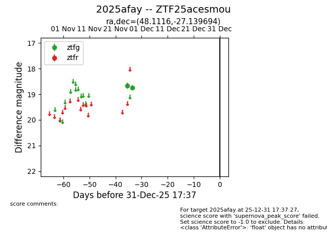
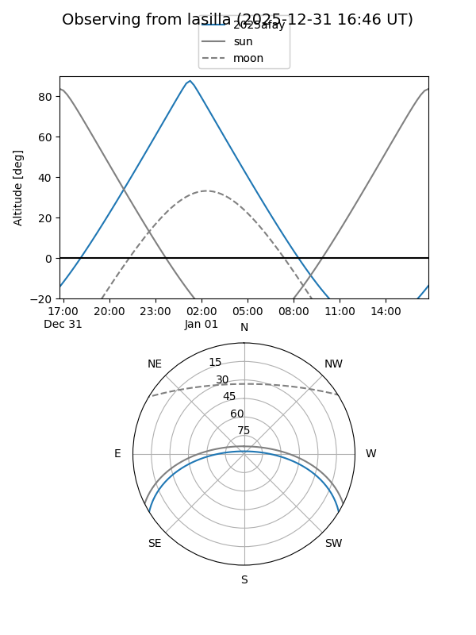
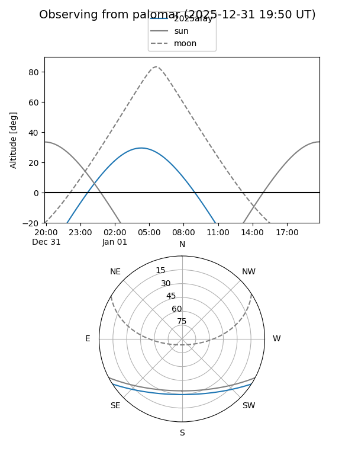

2025afay
Target 2025afay at 2025-12-18 11:17
Aliases and brokers:
FINK: fink-portal.org/ZTF25acesmou
Lasair: lasair-ztf.lsst.ac.uk/objects/ZTF25acesmou
ALeRCE: alerce.online/object/ZTF25acesmou
TNS: wis-tns.org/object/2025afay
YSE: ziggy.ucolick.org/yse/transient_detail/2025afay
alt names
ZTF25acesmou (ztf,fink_ztf)
2025afay (tns,yse)
Coordinates:
equatorial (ra, dec) = 48.1116,-27.13969
equatorial (HMS+DMS) = 03:12:26.79,-27:08:22.90
galactic (l, b) = (221.1971,-58.73361)
Photometry
last ztfg=18.74
2 ztfg detections
Lightcurve

Visibility


Additional plots